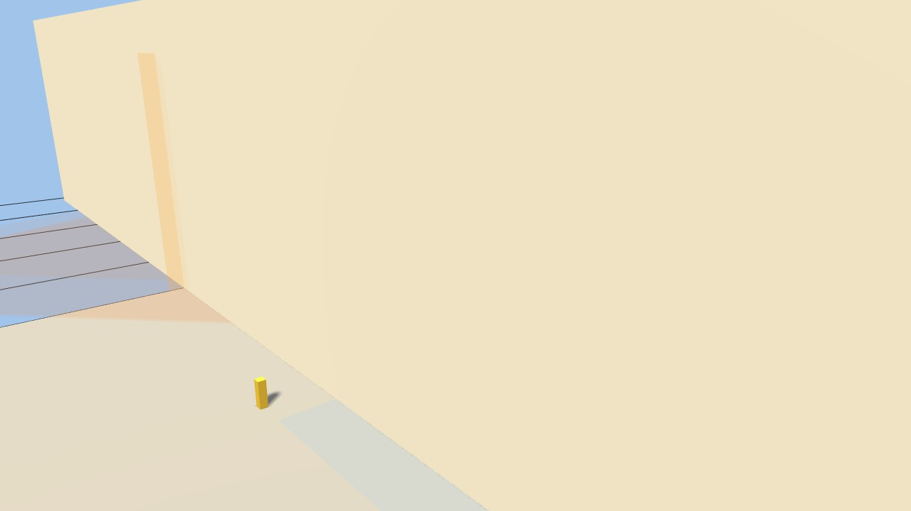
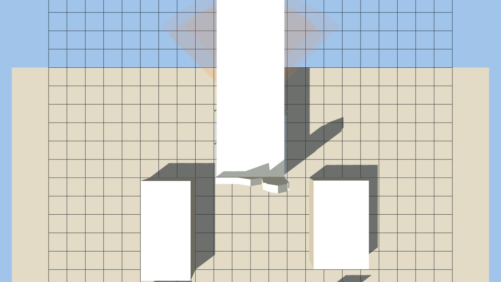
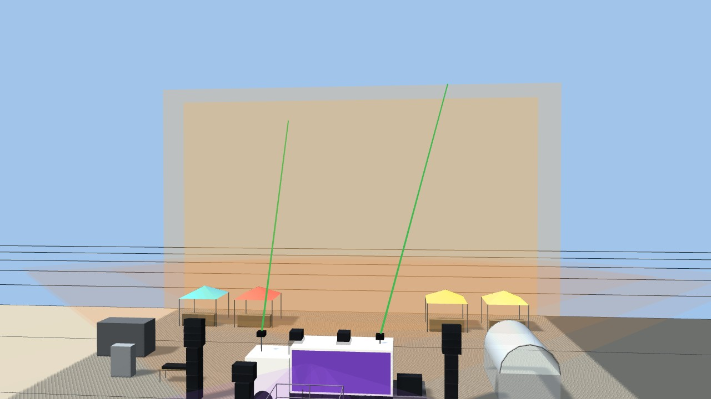
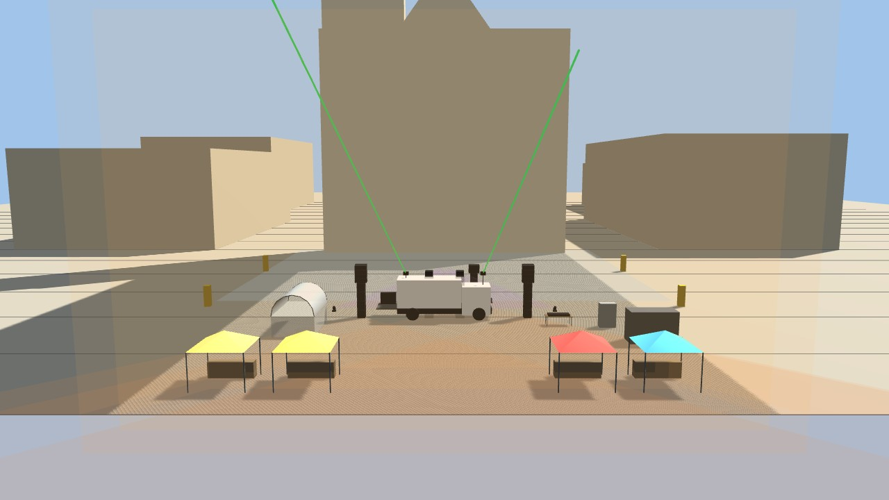
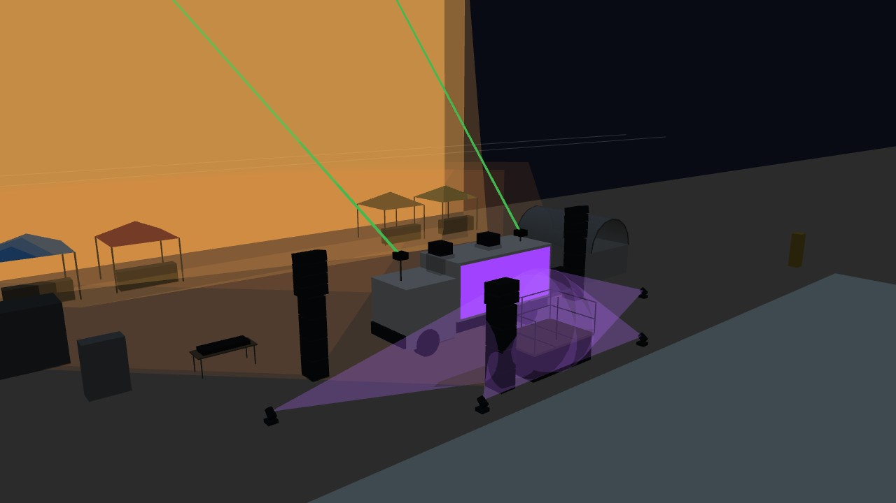
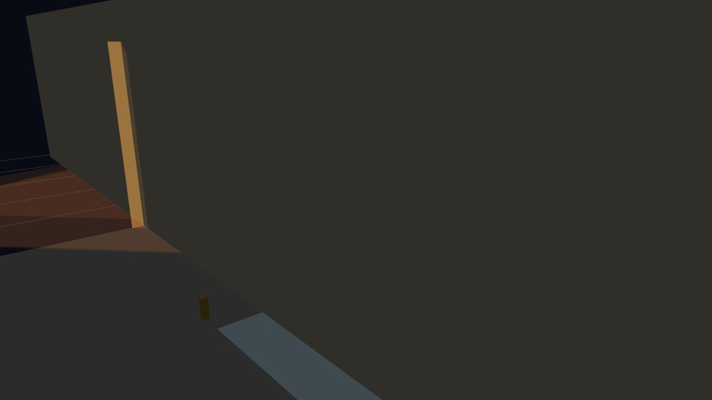
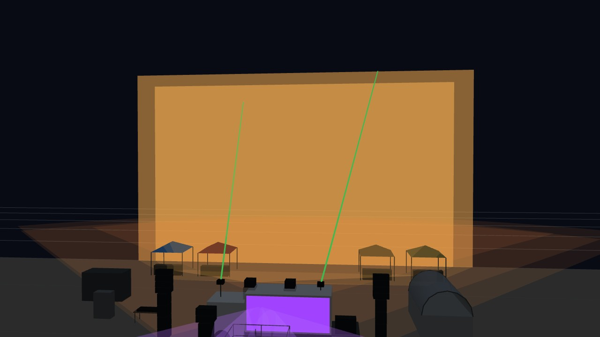

Hypothèses retenues avec l'organisateur (5 novembre 2026) : camion 20 m³ NoName garé en long à 20 m de la façade, vidéoprojecteurs et lasers sur son toit (3,5 m), petit podium de 3 praticables 2 × 1 m à 1 m devant le camion côté public, 3 piles de 4 subs SACH118 (jardin, cour, podium), 4 tonnelles 3 × 3 le long de la façade, PAR LED au sol, régie table non couverte avec tente garage 3 × 5 en repli, coffret 2 × 32 A tri (son / vidéo + lumière) ou groupe 63 A tri, service d'ordre bénévole. Zone public de 40 × 34 m derrière le camion : 1 360 m², 2 720 personnes à 2 pers/m².
| Ensemble | Position (x ; z) | Détail |
|---|---|---|
| Camion 20 m³ NoName | 0 ; 20 | écran sur le flanc côté public, hayon côté cour |
| VP 1 | −1,2 ; 20, à 3,5 m | Epson EB-PU2220B (Novelty, 20 000 lm) + ELPLU04, rapport 0,64 → image 31 × 19,5 m, 26 lux |
| VP 2 | 1,2 ; 20, à 3,5 m | Epson EB-L1755U (Bargraph, 15 000 lm) + ELPLU03, rapport 0,57 → image 35 × 22 m, 14 lux |
| Lasers (2) | ±3 ; 20, à 3,5 m | modèle à identifier, cibles sur la façade à 17 et 20 m de haut |
| Podium | 0 ; 24 | 3 praticables 2 × 1 m, 1 m, garde-corps, face au public |
| Piles de subs (3) | ±6,5 ; 20 et −2,5 ; 24,5 | 4 SACH118 + 4 têtes (jardin, cour), 4 + 2 (podium) |
| Tonnelles (4) | ±7,5 et ±12 ; 4,5 | prévention, secours, accueil, buvette, comptoirs vers le public |
| PAR LED (4) | ±4 ; 25,3 et ±9 ; 22 | au sol, vers le podium |
| Régie | −8,5 ; 17,5 | table 2 × 0,8, non couverte ; tente garage 3 × 5 à 10,5 ; 16,5 |
| Coffret | −12 ; 17 | 2 × 32 A tri : son / vidéo + lumière |
| Groupe 63 A tri (option) | −14 ; 13 | si le coffret forain manque |
| Bénévoles (6) | angles et fond de la zone public |
Ce que les contrôles géométriques disent :
Inventaire posé / possédé → à louer (saisi dans le studio) : camion 1 / 0 → 1 · praticables 3 / 3 → 0 · piles de subs 3 / 0 → 3 (NoName) · VP PU2220B 1 / 0 → 1 (Novelty) · VP L1755U 1 / 0 → 1 (Bargraph) · Hitachi CP-X10000 0 / 2 (non posés) · lasers 2 / 0 → 2 · tonnelles 4 / 4 → 0 · PAR LED 4 / 0 → 4 · tente garage 1 / 1 · régie table 1 / 1 · coffret 1 / 0 → 1 · groupe 1 / 0 → 1 · bénévoles 6 / 6.
Fichiers : outils/studio-implantation.html (configuration chargée au départ, bouton « Minimale »), unreal/implantation-minimale.json (schéma v3), projet Unreal généré depuis ce fichier, exports/studio/ (vues et vidéo config-minimale.mp4).






